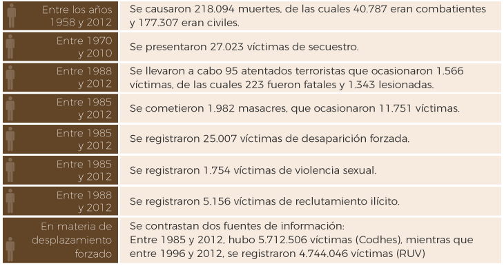
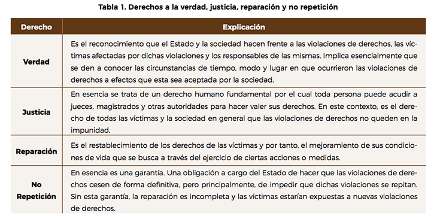

Respondamos el cuestionario, con el fin de identificar cuanto nos interesa conocer los antecedentes del quinto punto del proceso de paz.
Revisemos el paso a paso:
- Descargue el formulario de Word con las preguntas.
- Responda las preguntas llenando las casillas con X.
- Envíe sus respuestas en el botón actividades de la plataforma.
- La finalidad del acuerdo
-
La finalidad del acuerdo logrado en torno a la creación del Sistema Integral de Verdad, Justicia, Reparación y No Repetición, fue el de contribuir:
La lucha contra la impunidad combinando mecanismos judiciales que permiten la investigación y sanción de las graves violaciones a los derechos humanos y las graves infracciones al Derecho Internacional Humanitario, con mecanismos extrajudiciales complementarios que contribuyan al esclarecimiento de la verdad de lo ocurrido, la búsqueda de los seres queridos desaparecidos y la reparación del daño causado a personas, a colectivos y a territorios enteros. (Acuerdo Final, 2016, p. 8).
- El acuerdo Final expone
-
Antes de revisar los contenidos y finalidades de este quinto punto del Acuerdo de Paz, es necesario contextualizar el panorama de las víctimas para evidenciar la importancia que se les dio en el marco de las negociaciones de La Habana, tanto como para llegar a afirmarse que las víctimas están en el centro del Acuerdo de Paz.
El texto del Acuerdo Final expone:
El conflicto armado, que tiene múltiples causas, ha ocasionado un sufrimiento y un daño a la población sin igual en nuestra historia. Son millones los colombianos y colombianas víctimas de desplazamiento forzado, cientos de miles los muertos, decenas de miles los desaparecidos de toda índole, y un amplio número de familias, colectivos y poblaciones afectadas a lo largo y ancho del territorio, incluyendo comunidades campesinas, indígenas, afrocolombianas, negras, palenqueras, raizales, y Rom, personas en razón de sus creencias religiosas, partidos políticos, movimientos sociales y sindicales, población LGBTI y gremios económicos, entre otros. Sin olvidar otras formas menos visibles pero no menos dolorosas de victimización, como la violencia sexual, las afectaciones psicológicas, o la simple convivencia con el miedo. (Acuerdo Final, 2016, p. 126).
- Centro Nacional de Memoria Histórica
-
El Centro Nacional de Memoria Histórica (sf), ofrece al público, la siguiente información estadística sobre víctimas del conflicto armado en Colombia en su página web:
Estas cifras nos llevan a recordar que uno de los 15 Principios para la paz elaborados por Humberto De la Calle Lombana, Jefe del equipo negociador del Gobierno Nacional, señalan que “Las víctimas son la justificación ética del diálogo. Las víctimas están en el centro. Pero también las víctimas futuras. Aquellas que podemos evitar” (principio 3).
- Derechos a la verdad, justicia, reparación y no repetición
-
¿Qué se entiende por cada uno de estos derechos? Para explicarlo de forma breve revisemos la siguiente tabla.


Los objetivos de la CEV (p. 5) fueron definidos en el artículo 2º del decreto, así:
- Contribuir al esclarecimiento de lo ocurrido para lo cual ofrecerá una explicación amplia de la complejidad del conflicto a efectos que toda la sociedad colombiana entienda los diferentes impactos que tuvo.
- Promover y contribuir al reconocimiento de las víctimas como ciudadanos y por tanto como verdaderos sujetos de derecho que pueden aportar en la transformación del país. Pero también al reconocimiento voluntario que de las responsabilidades -individuales y colectivas- tenga que hacer todo el que haya participado en el conflicto, esto, como una forma de aportar a la verdad, justicia, reparación y no repetición, y que permita que la sociedad en general rechace dichos actos vulneratorios de derechos.
- Promover la convivencia a nivel territorial o el buen vivir, a través de la resolución pacífica de los conflictos y la superación de la indiferencia social, la construcción de una cultura de respeto y tolerancia y la creación de espacios para dignificar a las víctimas.
- El Decreto-Ley 589 expedido igualmente el 5 de abril de 2017 crea la UBPD como un mecanismo de carácter extrajudicial y humanitario encargado de la búsqueda, localización, identificación y entrega digna de las personas dadas por desaparecidas en el contexto del conflicto armado.
- Se trata de una labor relevante si se tienen en cuenta las cifras indicadas en el primer tema de esta unidad didáctica: 25.007 víctimas de desaparición forzada entre 1985 y 2012.
- Pero ¿qué significa que su labor sea extrajudicial? Básicamente, que la información que maneje no tendrá valor probatorio, es decir, que no podrá ser utilizada para atribuir responsabilidades en los procesos judiciales.
- Al igual que CEV, este nuevo organismo tendrá una duración fija. En este caso será de veinte (20) años. Esta norma establece en 31 artículos aspectos como: 1. Conformación, 2. Funciones, atribuciones y metodología de trabajo; 3. Trabajo coordinado con otras instituciones del Estado, entre otras.
Es muy importante entender que la JEP es en esencia la cara judicial del Acuerdo de Paz, el mecanismo de justicia transicional al que podrán acudir miembros de las Farc que estén comprometidos en crímenes, pero también civiles y personal de las fuerzas armadas que voluntariamente soliciten acogerse a la JEP por delitos cometidos en el marco del conflicto armado colombiano.
La finalidad de la JEP es investigar, esclarecer, perseguir, juzgar y sancionar las graves violaciones de derechos humanos e infracciones al DIH presentadas durante el conflicto armado. Dicha finalidad se cumplirá a través del desarrollo de los siguientes objetivos:
- Satisfacción del derecho a la justicia que tienen las víctimas.
- Ofrecimiento de la verdad a la sociedad en general.
- Adopción de decisiones que brinden seguridad jurídica a los partícipes directos o indirectos del conflicto.
- Contribución a la reparación de las víctimas, a la lucha contra la impunidad y al logro de una paz estable y duradera.
El Acto Legislativo 01 de 2017 señala que el Estado garantizará la reparación a las víctimas de forma integral, adecuada, diferenciada y efectiva, para lo cual deberá priorizar la distribución de las medidas de reparación con base en el universo de víctimas pero a la vez procurando la igualdad en el acceso a dichas medidas, siempre teniendo en cuenta los recursos disponibles.
Es importante aclarar que las medidas de reparación integral para las víctimas del conflicto armado, se implementan en el país desde el año 2011, en el marco de la Ley 1448 de 2011 o Ley de Víctimas, las cuales comprenden a su vez acciones, actividades y medidas de restitución, indemnización, rehabilitación, satisfacción y garantías de no repetición, desde una perspectiva o dimensión individual y colectiva, pero también material, moral y simbólica.
Así, en el texto del Acuerdo Final se establecen siete (7) medidas de reparación integral para la construcción de paz, que son:
- Actos tempranos de reconocimiento de responsabilidad colectiva.
- Acciones concretas de contribución a la reparación.
- Reparación colectiva en el fin del conflicto.
- Rehabilitación psicosocial.
- Procesos colectivos de retornos de personas desplazadas y reparación de víctimas en el exterior.
- Medidas sobre restitución de tierras.
- Adecuación y fortalecimiento participativo de la política de atención y reparación integral a víctimas.
El 21 de marzo de 2017 se llevó a cabo en la sede la Comisión Interamericana de Derechos Humanos (CIDH) en Washington, la audiencia sobre las garantías de no repetición en el Acuerdo de Paz en Colombia. Según la página web de la Consejería presidencial para los Derechos humanos (2017), en esta audiencia, Paula Gaviria Betancur, la Consejera Presidencial para los Derechos Humanos señaló que “el fin del conflicto con las Farc-EP y el pleno cumplimiento de lo pactado en el Acuerdo representan en sí una de las mayores garantías de no repetición, al abordar las causas estructurales que dieron origen y continuidad al conflicto”.
Estas declaraciones evidencian que las garantías de no repetición no pueden entenderse de forma aislada o como un componente “aparte” dentro del Acuerdo de Paz. Por el contrario se trata del resultado de la articulación de todos y cada uno de los componentes del Acuerdo Final orientados a la consecución de paz estable y duradera.
Para terminar el estudio de este tema, realicemos la actividad 2, con el fin de identificar cuanto hemos aprendido sobre el quinto punto del proceso de paz.
Revisemos el paso a paso:
- Descargue el documento de Word con las preguntas.
- Descargue la Sentencia C795 de 2014.
- Envíe sus respuestas en el botón actividades de la plataforma.